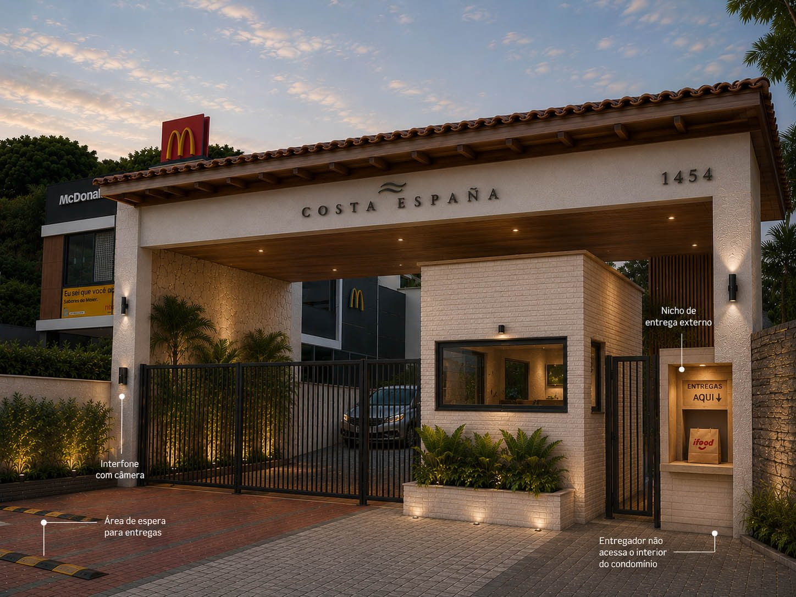

Portaria
Estudo de valorização da chegada principal, com foco em presença, acolhimento, materiais e primeira impressão do condomínio.

Imagem principal do estudo de valorização da portaria.
Clique aqui para ver a imagem maior

Proposta visual de valorização da entrada.
Clique aqui para ver a imagem maior
Leitura crítica da portaria atual
A portaria atual do Costa España tem um problema central: ela não comunica o padrão do imóvel. Estamos falando de um condomínio residencial em área nobre, frente-mar, em Salvador, mas a entrada hoje passa uma sensação fria, improvisada e pouco acolhedora.
O primeiro impacto visual é muito importante. Antes mesmo de alguém entrar no prédio, a portaria já comunica uma mensagem. Hoje, essa mensagem não é de sofisticação, cuidado, conforto ou valorização patrimonial. A leitura é quase corporativa: parece entrada de prédio comercial, estacionamento, empresa ou acesso técnico. Isso acontece por uma soma de elementos.
O pórtico atual é muito rígido, branco, reto e pesado. Ele parece apenas uma estrutura funcional, sem desenho arquitetônico. Não há profundidade, sombra, textura ou materialidade que tragam sensação de casa, praia ou acolhimento. O resultado é uma grande moldura retangular sem personalidade.
O portão, apesar de novo, reforça esse problema. Ele tem desenho muito funcional e corporativo. Como já foi comprado, não faz sentido descartá-lo, mas ele precisa ser integrado melhor ao conjunto. Pintura adequada, paisagismo e uma composição arquitetônica mais forte podem fazer com que ele deixe de ser protagonista e passe a ser apenas um elemento de segurança dentro de uma entrada mais bonita.
A guarita também é um ponto fraco importante. Hoje ela não parece parte de um projeto arquitetônico. Ela parece uma caixa colocada ali por necessidade. Isso prejudica tanto a estética quanto a percepção de segurança. Uma guarita bem resolvida deve transmitir controle, acolhimento e organização. Não precisa ser chamativa, mas precisa parecer pensada.
Direção proposta pela fotomontagem
Na fotomontagem 1, a proposta melhora justamente esses pontos. A entrada passa a ter uma linguagem mais residencial, mais praieira e mais nobre. O telhado com telhas e madeira cria imediatamente uma sensação de “casa”, sem perder sofisticação. Esse detalhe é importante porque o Costa España não deveria parecer um prédio corporativo. Ele deveria comunicar moradia, conforto, litoral, permanência e valorização.
A madeira no forro do pórtico também ajuda muito. Ela aquece a composição e tira a frieza do branco puro. O branco continua existindo, mas deixa de parecer azulejo frio ou fachada comercial. Ele passa a conversar com materiais naturais, como madeira, pedra, tijolinho claro e vegetação tropical.
Outro ponto positivo da proposta é o letreiro mais discreto. Em condomínios de alto padrão, o nome não precisa gritar. Pelo contrário: quando o letreiro é mais elegante, menor e bem posicionado, ele transmite mais sofisticação. Luxo não é excesso de luz, nem letras enormes. Luxo é proporção, acabamento, silêncio visual e coerência.
A guarita, na nova proposta, ganha mais presença. Ela passa a parecer uma pequena construção integrada ao conjunto, quase uma “casinha” de apoio, e não uma caixa improvisada. Isso é importante porque a portaria é o primeiro contato físico do morador, visitante, entregador e prestador de serviço com o condomínio.
A vegetação também muda completamente a leitura. Plantas tropicais, bem posicionadas, trazem Salvador para dentro da composição. Elas suavizam o portão, reduzem a dureza dos muros e criam uma sensação de resort residencial, sem precisar exagerar. Para um condomínio frente-mar, esse diálogo com o clima, a paisagem e a vegetação é essencial.
Cuidados de execução
A iluminação precisa ser muito bem dosada. A proposta deve evitar aquele efeito artificial, de bar, motel ou fachada comercial iluminada demais. O ideal é iluminação quente, baixa e indireta, apenas para valorizar volumes, garantir segurança e criar acolhimento. Luz demais empobrece. Luz bem colocada valoriza.
A funcionalidade também pode melhorar. A portaria pode prever um ponto seguro para entregas, com interfone, câmera e nicho de recebimento, evitando que entregadores entrem no condomínio ou que o porteiro precise sair da guarita. Isso traz segurança sem prejudicar a estética.
O mais importante é entender que a portaria não é apenas uma entrada. Ela é parte do patrimônio. Uma portaria ruim desvaloriza a percepção do prédio. Uma portaria bem resolvida valoriza o condomínio, melhora a experiência dos moradores, transmite segurança e comunica cuidado.
A proposta da fotomontagem não precisa ser copiada literalmente, mas ela aponta uma direção correta: transformar a entrada atual, fria e corporativa, em uma entrada residencial, tropical, elegante e coerente com um condomínio de alto padrão frente-mar em Salvador.